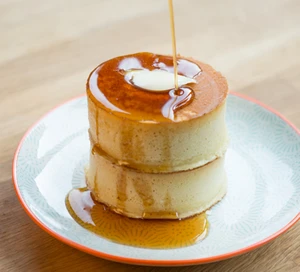

Fluffy Japanese Pancakes
Description
Make these tall Japanese pancakes and watch them bounce and jiggle. Something a little different for your next brunch or weekend breakfast treat.
Ingredients
- 150g self-raising flour
- 1/2 tsp baking powder
- 2 tbsp golden caster sugar
- 2 eggs
- 1 tbsp rapeseed, sunflower or grapeseed oil
- 180ml milk
- dash of vanilla extract
- oil spray for cooking or a mild-flavour cooking oil (whatever you use in the batter)
- maple syrup, ice cream, crispy bacon, berries (optional)
Steps
- Sift the flour and baking powder into a bowl and add the sugar. Make a well in the centre and add the eggs and oil. Stir them into the flour then gradually add the milk and use a whisk to beat the liquid in. You can also put the lot in a blender and blitz it. Stir in the vanilla. This batter is best used quickly.
- Put a non-stick pan over a low heat and put one or two non-stick crumpet rings (about 3.5cm high) in the pan. Spray (or brush) the pan lightly with oil and the inside of the rings too. Fill them no more than 3/4 full with batter then cover the pan with a lid and cook the pancakes for about 10 minutes on a very low heat. By this time the top of the pancake should be covered in little bubbles and look dry around the edges.
- Very carefully turn the pancakes over. You can do this by lifting each pancake in it's ring onto the lid and then inverting the pan over them before turning the whole thing back over and taking off the lid. Cook for another 1-2 minutes. Keep warm whilst you use up the rest of the batter. stack and serve with your favourite toppings.